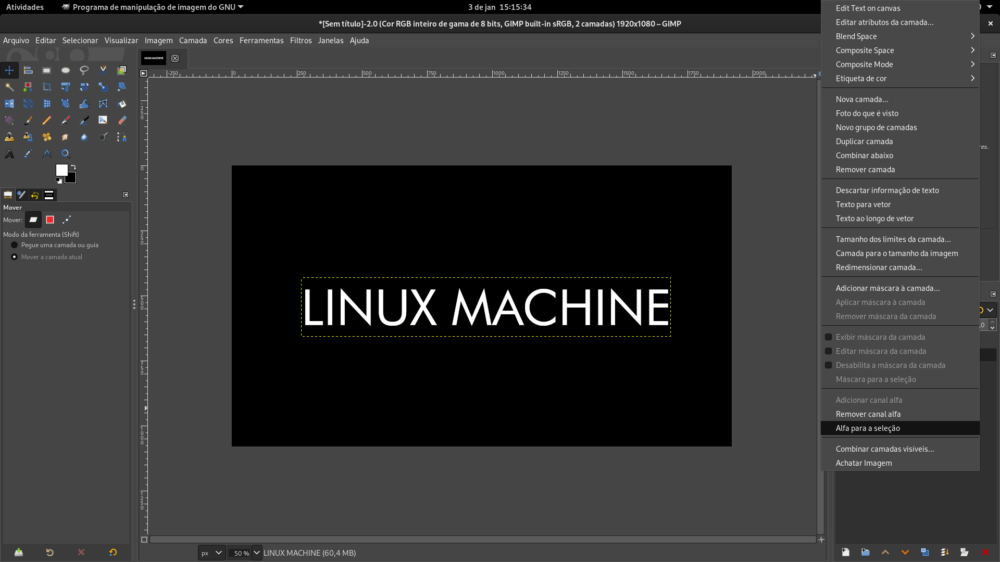

Efeito neon no GIMP.
Vamos começar criando um modelo de página, para isso vá em “Arquivo” > “Nova” ou (Ctrl+N) e clique em “OK” na janela que será aberta;
* Escolha o tamanho do modelo de acordo com a sua preferência.
Agora vamos preencher na cor preta o modelo da página que criamos, para isto selecione a “Ferramenta de Preenchimento” ou (Shift+B). Assim vamos ter um fundo que vai destacar o efeito do neon no final;
Depois de preencher o fundo do modelo na cor preta, selecione a “Ferramenta de Texto” ou (T) e digite a palavra ou frase que você quer personalizar. Altere a cor para branco e escolha a fonte e tamanho de acordo com a sua preferência;
* Neste passo a cor ainda não importa, a alteração da cor é somente para visualizar melhor
Agora com a layer/camada de texto criada, clique com o botão direito no mouse sobre ela e selecionar a opção “Alfa Para Seleção”:
Nota
Note que, depois de selecionar essa opção, irá gerar uma linha tracejada ao redor das letras…
Em seguida vá em “Editar” > “Contornar Seleção”
Irá abrir uma janela com as opções que podem ser alteradas. Recomendo que altere somente uma opção, para ter o efeito do neon. A “Largura da Linha”, ela vai criar um contorno externo nas letras que dá a ilusão do neon, e nessa opção você pode deixar a linha mais grossa ou fina, mas lembre-se de que este valor irá alterar conforme o tamanho da sua fonte.
Altere a cor do contorno de acordo com a sua preferência e clique em “Stroke” na janela.
Após criarmos um contorno externo nas letras podemos deletar o corpo da letra, que é o preenchimento branco que ficou. Para isso basta dar “Delete” e ficará somente o contorno, nesse caso o contorno verde;
Com o contorno criado remova a seleção do contorno, vá em "Selecionar" > “Nada” ou (Shift+Crtl+A)
Depois de criarmos a base, podemos seguir para a parte da iluminação que vai dar o efeito de neon ao seu texto
Para criar a iluminação vá em “Filtros” > “Luz e Sombra” > “Sombra Projetada”
Na janela que será aberta vai ter várias opções. Para se obter o efeito do neon configurei as seguintes opções: Posição da sombra (X e Y ), desfoque da sombra (Raio de Desfoque), densidade da sombra (Grow Radius) e opacidade da sombra (Opacidade).
Com o refinamento dessas opções você terá um efeito de neon, podendo aumentar ou diminuir a intensidade ou alterar as outras opções de acordo com a sua preferência.
E ao final desse passo a passo o resultado será como esse: